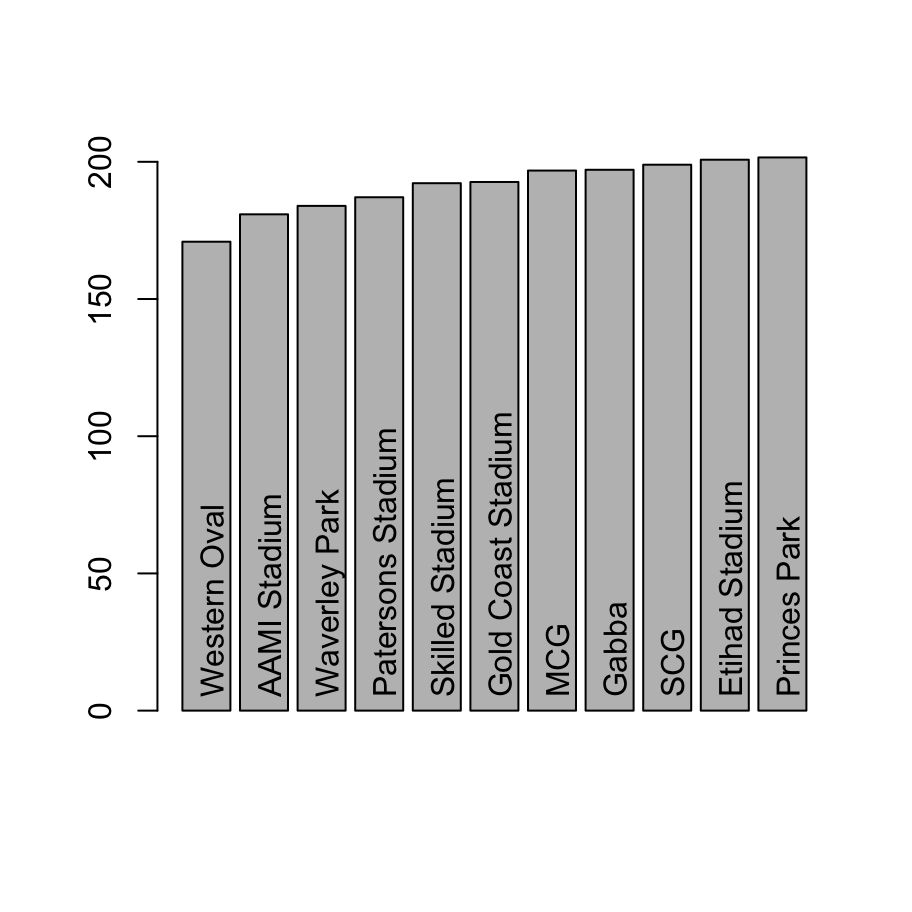

Introductory Statistics
Thou shalt not answer questionnaires
Or quizzes upon World Affairs,
Nor with compliance
Take any test. Thou shalt not sit
With statisticians nor commit
A social science
- W.H. Auden, Under Which Lyre: A Reactionary Tract for the Times, 1946
load("./data/afl24.Rdata") # load data
head(afl) # show the first few rows## home.team away.team home.score away.score year round weekday day
## 1 North Melbourne Brisbane 104 137 1987 1 Fri 27
## 2 Western Bulldogs Essendon 62 121 1987 1 Sat 28
## 3 Carlton Hawthorn 104 149 1987 1 Sat 28
## 4 Collingwood Sydney 74 165 1987 1 Sat 28
## 5 Melbourne Fitzroy 128 89 1987 1 Sat 28
## 6 St Kilda Geelong 101 102 1987 1 Sat 28
## month is.final venue attendance
## 1 3 FALSE MCG 14096
## 2 3 FALSE Waverley Park 22550
## 3 3 FALSE Princes Park 19967
## 4 3 FALSE Victoria Park 17129
## 5 3 FALSE MCG 18012
## 6 3 FALSE Gold Coast Stadium 158670.1 Confidence intervals
As usual there are many ways to compute the confidence interval of the mean in R. One relatively simple one is with the ciMean function in the lsr package, which (conveniently) can take a data frame as input and computes confidence intervals for all the numeric variables:
ciMean(afl)## 2.5% 97.5%
## home.team* NA NA
## away.team* NA NA
## home.score 100.621214 102.39555
## away.score 90.250700 91.98720
## year 1998.566873 1998.97782
## round 11.999916 12.40185
## weekday* NA NA
## day 15.594242 16.13388
## month 6.006252 6.10548
## is.final* NA NA
## venue* NA NA
## attendance 31597.324710 32593.12361By default it returns a 95% confidence interval, but you can adjust the conf argument if you want something different. For instance, here’s an 80% confidence interval
ciMean(
x = afl,
conf = .8
)## 10% 90%
## home.team* NA NA
## away.team* NA NA
## home.score 100.928367 102.088392
## away.score 90.551304 91.686592
## year 1998.638012 1998.906681
## round 12.069495 12.332274
## weekday* NA NA
## day 15.687658 16.040461
## month 6.023429 6.088303
## is.final* NA NA
## venue* NA NA
## attendance 31769.706887 32420.741437You can also give it a single variable as input if you like:
ciMean( afl$home.score )## 2.5% 97.5%
## [1,] 100.6212 102.39550.2 Comparing two means
Does the home team tend to outscore the away team? This requires a paired samples t-test:
pairedSamplesTTest(~ home.score + away.score, afl)##
## Paired samples t-test
##
## Variables: home.score , away.score
##
## Descriptive statistics:
## home.score away.score difference
## mean 101.508 91.119 10.389
## std dev. 29.660 29.027 44.335
##
## Hypotheses:
## null: population means equal for both measurements
## alternative: different population means for each measurement
##
## Test results:
## t-statistic: 15.359
## degrees of freedom: 4295
## p-value: <.001
##
## Other information:
## two-sided 95% confidence interval: [9.063, 11.716]
## estimated effect size (Cohen's d): 0.234Are finals games lower scoring than home and away games? This requires an independent samples t-test:
afl$total.score <- afl$home.score + afl$away.score
independentSamplesTTest(total.score ~ is.final, afl)## Warning in independentSamplesTTest(total.score ~ is.final, afl): group
## variable is not a factor##
## Welch's independent samples t-test
##
## Outcome variable: total.score
## Grouping variable: is.final
##
## Descriptive statistics:
## FALSE TRUE
## mean 193.064 183.680
## std dev. 38.602 34.235
##
## Hypotheses:
## null: population means equal for both groups
## alternative: different population means in each group
##
## Test results:
## t-statistic: 3.762
## degrees of freedom: 224.433
## p-value: <.001
##
## Other information:
## two-sided 95% confidence interval: [4.468, 14.3]
## estimated effect size (Cohen's d): 0.2570.3 Categorical associations
Are all teams equally likely to play their home games on every weekday? For that we might consider using a chi-square test of categorical association, but as you can see from the output below, a little care is needed:
associationTest(~ home.team + weekday, afl)## Warning in associationTest(~home.team + weekday, afl): Expected frequencies
## too small: chi-squared approximation may be incorrect##
## Chi-square test of categorical association
##
## Variables: home.team, weekday
##
## Hypotheses:
## null: variables are independent of one another
## alternative: some contingency exists between variables
##
## Observed contingency table:
## weekday
## home.team Mon Tue Wed Thu Fri Sat Sun
## Adelaide 1 0 0 0 26 94 114
## Brisbane 2 0 0 5 12 132 131
## Carlton 4 1 1 3 16 179 62
## Collingwood 12 3 0 3 46 167 55
## Essendon 6 0 3 4 52 158 66
## Fitzroy 4 0 0 0 2 84 10
## Fremantle 1 1 0 0 19 66 92
## Geelong 7 0 0 1 13 185 79
## Hawthorn 11 0 0 0 16 189 63
## Melbourne 22 0 1 0 28 140 87
## North Melbourne 6 0 0 3 84 123 69
## Port Adelaide 1 0 0 1 15 78 69
## Richmond 8 1 1 3 48 138 68
## St Kilda 7 0 0 1 29 174 68
## Sydney 0 0 0 0 31 85 161
## West Coast 1 0 0 1 51 93 138
## Western Bulldogs 5 0 0 0 26 141 89
##
## Expected contingency table under the null hypothesis:
## weekday
## home.team Mon Tue Wed Thu Fri Sat Sun
## Adelaide 5.36 0.328 0.328 1.368 28.1 121.8 77.7
## Brisbane 6.43 0.394 0.394 1.641 33.7 146.1 93.3
## Carlton 6.07 0.372 0.372 1.548 31.8 137.8 88.0
## Collingwood 6.52 0.399 0.399 1.664 34.2 148.2 94.6
## Essendon 6.59 0.404 0.404 1.682 34.6 149.7 95.6
## Fitzroy 2.28 0.140 0.140 0.582 12.0 51.8 33.1
## Fremantle 4.08 0.250 0.250 1.042 21.4 92.8 59.2
## Geelong 6.50 0.398 0.398 1.659 34.1 147.7 94.3
## Hawthorn 6.36 0.390 0.390 1.624 33.4 144.6 92.3
## Melbourne 6.34 0.388 0.388 1.618 33.3 144.0 92.0
## North Melbourne 6.50 0.398 0.398 1.659 34.1 147.7 94.3
## Port Adelaide 3.74 0.229 0.229 0.954 19.6 85.0 54.2
## Richmond 6.09 0.373 0.373 1.554 31.9 138.3 88.3
## St Kilda 6.36 0.390 0.390 1.624 33.4 144.6 92.3
## Sydney 6.32 0.387 0.387 1.612 33.1 143.5 91.6
## West Coast 6.48 0.397 0.397 1.653 34.0 147.2 93.9
## Western Bulldogs 5.95 0.365 0.365 1.519 31.2 135.2 86.3
##
## Test results:
## X-squared statistic: 640.853
## degrees of freedom: 96
## p-value: <.001
##
## Other information:
## estimated effect size (Cramer's v): 0.158
## warning: expected frequencies too small, results may be inaccurateThe reason for the warning, of course, is that with so few games played on weekdays, many of the expected cell counts are very small, and that violates one of the assumptions of the chi-square test. So let’s create a new variable that collapses these:
afl$weekday_small <- as.character(afl$weekday)
weekgames <- afl$weekday_small %in% c("Mon","Tue","Wed","Thu","Fri")
afl$weekday_small[weekgames] <- "M-F"
afl$weekday_small <- as.factor(afl$weekday_small)Now we just have three levels of this factor, corresponding to Saturday games, Sunday games, and weekday games. So if we run the test of association with this version of the variable we no longer get the warning message:
associationTest(~ home.team + weekday_small, afl)##
## Chi-square test of categorical association
##
## Variables: home.team, weekday_small
##
## Hypotheses:
## null: variables are independent of one another
## alternative: some contingency exists between variables
##
## Observed contingency table:
## weekday_small
## home.team M-F Sat Sun
## Adelaide 27 94 114
## Brisbane 19 132 131
## Carlton 25 179 62
## Collingwood 64 167 55
## Essendon 65 158 66
## Fitzroy 6 84 10
## Fremantle 21 66 92
## Geelong 21 185 79
## Hawthorn 27 189 63
## Melbourne 51 140 87
## North Melbourne 93 123 69
## Port Adelaide 17 78 69
## Richmond 61 138 68
## St Kilda 37 174 68
## Sydney 31 85 161
## West Coast 53 93 138
## Western Bulldogs 31 141 89
##
## Expected contingency table under the null hypothesis:
## weekday_small
## home.team M-F Sat Sun
## Adelaide 35.5 121.8 77.7
## Brisbane 42.6 146.1 93.3
## Carlton 40.2 137.8 88.0
## Collingwood 43.2 148.2 94.6
## Essendon 43.7 149.7 95.6
## Fitzroy 15.1 51.8 33.1
## Fremantle 27.0 92.8 59.2
## Geelong 43.1 147.7 94.3
## Hawthorn 42.1 144.6 92.3
## Melbourne 42.0 144.0 92.0
## North Melbourne 43.1 147.7 94.3
## Port Adelaide 24.8 85.0 54.2
## Richmond 40.3 138.3 88.3
## St Kilda 42.1 144.6 92.3
## Sydney 41.8 143.5 91.6
## West Coast 42.9 147.2 93.9
## Western Bulldogs 39.4 135.2 86.3
##
## Test results:
## X-squared statistic: 480.877
## degrees of freedom: 32
## p-value: <.001
##
## Other information:
## estimated effect size (Cramer's v): 0.2370.4 Comparing several means
Is there such a thing as a “high scoring ground”? Let’s take a look at the average number of points per game at each different ground, only considering grounds that had at least 100 games played during the the time period:
venue.use <- table(afl$venue)
majors <- venue.use[venue.use >= 100]
# restrict the data to these games
afl.majors <- afl[ afl$venue %in% names(majors), ]Visually it does look like there might something here:
## venue total.score
## 11 Western Oval 170.8839
## 1 AAMI Stadium 180.8619
## 10 Waverley Park 183.9355
## 6 Patersons Stadium 187.0838
## 9 Skilled Stadium 192.2059
## 4 Gold Coast Stadium 192.6486
## 5 MCG 196.8094
## 3 Gabba 197.0955
## 8 SCG 198.9414
## 2 Etihad Stadium 200.7656
## 7 Princes Park 201.5918
A first pass analysis for this would be ANOVA. The underlying statistical model in ANOVA and multiple regression is essentially the same, and the work is done by the lm function in R. However, it’s generally considered sensible to use the aov function in the first instance, because that does a few nice things that come in handy with later analyses.
mod <- aov(total.score ~ venue, afl.majors)To analyse it as an ANOVA, the Anova function in the car package is very nice:
Anova(mod)## Anova Table (Type II tests)
##
## Response: total.score
## Sum Sq Df F value Pr(>F)
## venue 237330 10 16.616 < 2.2e-16 ***
## Residuals 5681696 3978
## ---
## Signif. codes: 0 '***' 0.001 '**' 0.01 '*' 0.05 '.' 0.1 ' ' 1It seems to be a real thing, but we’ll come back to that in a moment because we might have some worries about confounding variables.
0.4.1 Post hoc tests
I am not a fan of post hoc tests, even with corrections for Type I error inflation. To see why they drive me nuts, let’s run the output of the ANOVA through the posthocPairwiseT function. By default it uses the Holm correction, but lets just use the simpler and very conservatice Bonferroni correction:
posthocPairwiseT(mod, p.adjust.method = "bonferroni")##
## Pairwise comparisons using t tests with pooled SD
##
## data: total.score and venue
##
## AAMI Stadium Etihad Stadium Gabba Gold Coast Stadium
## Etihad Stadium 3.1e-13 - - -
## Gabba 2.0e-05 1.00000 - -
## Gold Coast Stadium 0.20642 1.00000 1.00000 -
## MCG 3.8e-11 1.00000 1.00000 1.00000
## Patersons Stadium 1.00000 5.0e-06 0.09684 1.00000
## Princes Park 2.7e-11 1.00000 1.00000 1.00000
## SCG 1.6e-07 1.00000 1.00000 1.00000
## Skilled Stadium 0.02836 0.34402 1.00000 1.00000
## Waverley Park 1.00000 1.1e-08 0.00317 1.00000
## Western Oval 0.75909 2.4e-12 1.4e-07 0.00096
## MCG Patersons Stadium Princes Park SCG
## Etihad Stadium - - - -
## Gabba - - - -
## Gold Coast Stadium - - - -
## MCG - - - -
## Patersons Stadium 0.00075 - - -
## Princes Park 1.00000 2.6e-05 - -
## SCG 1.00000 0.00573 1.00000 -
## Skilled Stadium 1.00000 1.00000 0.31433 1.00000
## Waverley Park 2.0e-06 1.00000 1.3e-07 9.0e-05
## Western Oval 2.7e-10 0.00371 9.9e-12 3.5e-09
## Skilled Stadium Waverley Park
## Etihad Stadium - -
## Gabba - -
## Gold Coast Stadium - -
## MCG - -
## Patersons Stadium - -
## Princes Park - -
## SCG - -
## Skilled Stadium - -
## Waverley Park 0.74049 -
## Western Oval 9.2e-05 0.08420
##
## P value adjustment method: bonferroniMy main complaint? I have no idea what this means because I didn’t really have any idea what I was looking for. I could certainly run through all these automatically-detected “significant” relationships to see what makes any sense, but I honestly don’t know what that would buy me. Basically I’m not sure why I’m calculating a \(p\)-value (a tool designed to test hypotheses) in a situation where I really didn’t have any hypotheses ahead of time. To my mind this use of hypothesis testing has the effect of eroding the boundary between confirmatory tests (where the researcher has a theory ahead of time), and exploratory analyses (where we’re just looking for interesting patterns). I’m a big fan of doing both things as part of science, of course, I just think they need to be kept clearly separate :-)
But that’s a topic for another time.
0.5 Assessing relationships
One thing that people commented on a lot during this time period was the fact that the games became lower scoring over time. Is that a real effect, or was it just random noise?
mod <- lm(total.score ~ year, afl)
summary(mod)##
## Call:
## lm(formula = total.score ~ year, data = afl)
##
## Residuals:
## Min 1Q Median 3Q Max
## -148.84 -24.20 -0.09 24.71 139.02
##
## Coefficients:
## Estimate Std. Error t value Pr(>|t|)
## (Intercept) 1668.10138 169.27250 9.855 <2e-16 ***
## year -0.73819 0.08469 -8.717 <2e-16 ***
## ---
## Signif. codes: 0 '***' 0.001 '**' 0.01 '*' 0.05 '.' 0.1 ' ' 1
##
## Residual standard error: 38.13 on 4294 degrees of freedom
## Multiple R-squared: 0.01739, Adjusted R-squared: 0.01716
## F-statistic: 75.98 on 1 and 4294 DF, p-value: < 2.2e-16yearly.score <- aggregate(
formula = total.score ~ year,
data = afl,
FUN = mean
)
plot(
x = yearly.score$year,
y = yearly.score$total.score,
type = "p",
pch = 19,
xlab = "Year",
ylab = "Average Points per Game"
)
abline(coef = mod$coef)
That’s pretty clearly a real effect, but it does open up a new line of worries about the last analysis…
0.5.1 Hierarchical regression
Suppose we’re a little paranoid. Maybe the effect of venue is spurious: some grounds came into use at different years, and we know there’s an effect of year on the total.score. Similarly, folk wisdom has it that finals games are lower scoring, and those games are disproportionately likely to be played at the MCG. Maybe there’s an effect of the size of the crowd? Some stadiums are bigger than others? Maybe there’s an effect of weekday, and some venues do indeed get used on different days. Maybe it’s an effect of the teams playing, since different teams tend to play at different grounds (especially when considering the home team!) To address this let’s dump all those variables into a regression model, and then see if adding venue leads to an improvement in fit over and above those. In other words, we’ll do a hierarchical regression. Here it is in R:
mod1 <- lm(total.score ~ year + home.team + away.team + is.final + weekday + attendance, afl.majors)
mod2 <- lm(total.score ~ year + home.team + away.team + is.final + weekday + attendance + venue, afl.majors)
anova(mod2, mod1)## Analysis of Variance Table
##
## Model 1: total.score ~ year + home.team + away.team + is.final + weekday +
## attendance + venue
## Model 2: total.score ~ year + home.team + away.team + is.final + weekday +
## attendance
## Res.Df RSS Df Sum of Sq F Pr(>F)
## 1 3937 5266076
## 2 3947 5519332 -10 -253256 18.934 < 2.2e-16 ***
## ---
## Signif. codes: 0 '***' 0.001 '**' 0.01 '*' 0.05 '.' 0.1 ' ' 1Overall it does rather look like there are genuine differences between venues. Though of course there could be many other things we didn’t control for!
0.5.2 Testing a correlation
As an aside, it’s often noted that a Pearson correlation is essentially equivalent to a linear regression model with a single predictor. So we should be able to replicate the total.score ~ year analysis as a correlation. We use the cor.test function to run a hypothesis test here:
cor.test(
x = afl$total.score,
y = afl$year
)##
## Pearson's product-moment correlation
##
## data: afl$total.score and afl$year
## t = -8.7166, df = 4294, p-value < 2.2e-16
## alternative hypothesis: true correlation is not equal to 0
## 95 percent confidence interval:
## -0.1611277 -0.1023575
## sample estimates:
## cor
## -0.1318585To see that these are giving the same answer, let’s take the raw correlation of \(r=-.13\), square it, and compare it to the (unadjusted) \(R^2\) value of 0.01739 reported above:
r <- -0.1318585
print(r^2)## [1] 0.01738666Yes, those are the same!